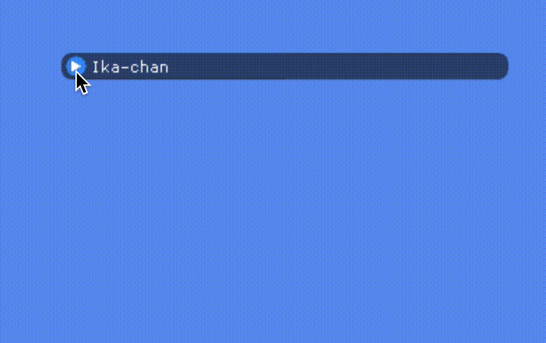
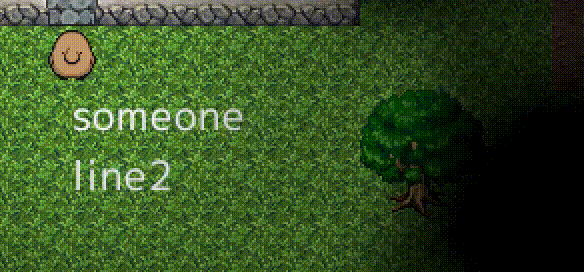
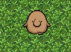
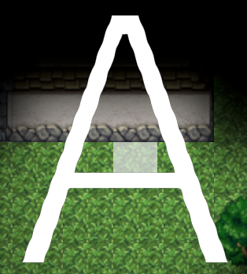
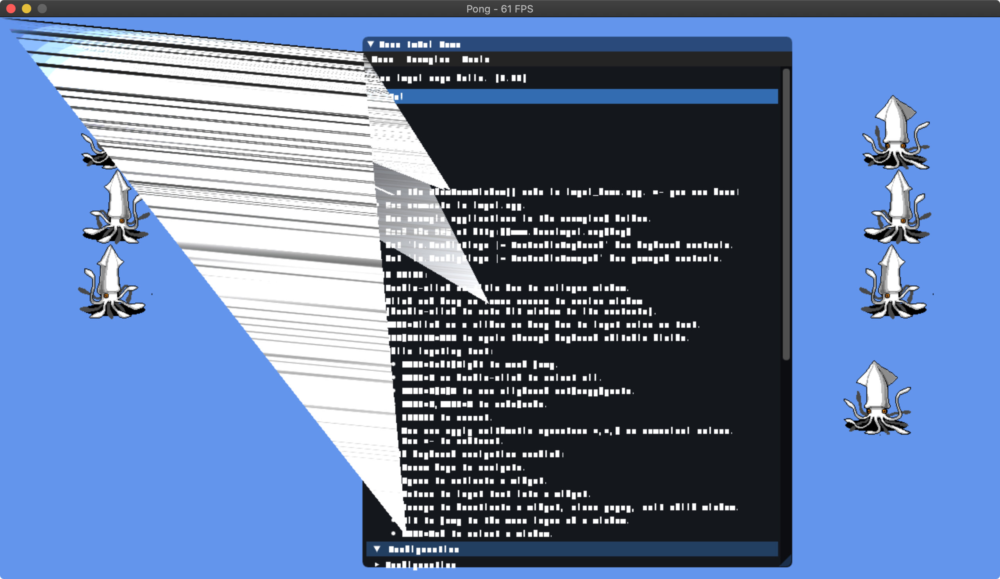

GameEngineDev Advent Calendar 2022 11 日目の記事です。
開発中の 2D フレームワークについて共有します。
『GameEngineDev』カレンダーの記事ですが、 2D フレームワークに関する投稿となります。スケールが落ちますがご了承ください 🙇
背景
作っているもの
開発中フレームワークの名前は inkfs 🦑 です。ライブラリを組み合わせた程度のものですから、経験者なら 2 週間程度で再現できるでしょう。

Figure 1: マスコットです。配布元サイトへのリンクを後日追加します……
ライブラリが担当するのはメディアの処理で、ウィンドウ・グラフィクス・オーディオ・テキストなどがあたります。その上の薄いレイヤが inkfs です。
ゲームエンジンとの違い
『ゲームエンジン』は『フレームワーク』よりも大規模な開発が伴っている印象があります。アセット処理の GUI ツールが付属していたり、ブラウザやスマートフォンなど様々なプラットフォームに対応します。
あるいは低レイヤ寄りのライブラリを自作していたら、『ゲームエンジン』に当たると思います。必要な知識も段違いです。そうした感覚ぼんやり共通されている気がします。
主なモジュール
inkfs 🦑 の主なモジュールを紹介します。
1. ECS (Entity-Component-System)
inkfs 🦑 は Rust でゲームを作るためのフレームワークです。
Rust でゲームを作る際は、データの持ち方が重要です。たとえば、
- グローバル変数
ゲーム開発に必要なグローバル変数は、描画コンテクストやゲームマップなどです。 Rust に継承はありませんから、コンポジションしようとなります。しかしデータのネストが深くなると、借用の分割も面倒です。 - キャラデータ
ロボットや蝙蝠など、異なる種類のキャラクターデータを一括で処理したいことがあります。traitで抽象するとポインタが増えますし、traitの組み合わせでうまく表現できなくなる懸念があります。
これらは Entity-Component-System を使うと一気に解決します。むしろ伝統的なゲームの作り方の方が Rust ではチャレンジングだったりします。
2. Scene graph
inkfs 🦑 のシーングラフは ECS の上に作っています。

Renderable の共通コンポーネント
どの rendearble も以下のコンポーネントを持ちます:
Node
親子関係の連結リストです。Transform(LocalTranform+GlobalTransform)ZOrder
様々な種類の renderable
様々な renderable をコンポーネントで表現できます:
PrimitiveSpriteNineSliceSpriteText,RasterText
アニメーションも容易に表現できます。

ソート
上の renderable は様々なデータに分かれていますが、頂点データに変えた後には同質のデータです。以下の DrawCall を作成後、 z_order でソートしてから描画しています:
pub struct DrawCall {
pub z_order: ZOrder,
pub verts_range: ops::Range<u32>,
pub tex_id: rgpu::Id<rgpu::Texture>,
}
3. ウィンドウ・入力 (sdl2)

主なウィンドウのライブラリ
ウィンドウ表示・入力処理のライブラリとしては SDL や GLFW が有名です。
- SDL が最も安心な気がします。様々なサブモジュールが付属しますが、『ウィンドウ操作のシェル』のように扱うのが良いとされています。
- GLFW は "GL" とありますが OpenGL 以外のユーザも使用できます。僕は使ったことがありません。
- Rust 製のライブラリとしては
winitもあります。以前は macOS での動きがあまりよく無かったのですが、最近の動向はどうなのか……
入力処理
イベント駆動にするか、すべてのキー入力イベントを 1 つの Input オブジェクトに集約すると思います。僕は後者が好みです。
inkfs 🦑 では主に FNA の Input モジュール を参考に、入力状態のダブルバッファを持っています。また『仮想キー』のモジュールを作り、『Enter または Space』のようなキーを定義できるようにしています。
FPS カウンター
平均FPSを楽に近似する にある式を使うと簡単です。
僕はなぜか spike の計算が上手くいってないですが……
4. グラフィクス (wgpu)
wgpu::RenderPass<'w> と借用ルール
古典的な SpriteBatch は、頂点データの作成と描画関数の呼び出しを交互に行います。しかし wgpu を使っていると、まず頂点データを作成し、それから一気に描画関数を呼び出すという形になりがちです。
この方式は pipelined rendering に繋がります。
この方式に至るのは、 wgpu::RenderPass<'w> が Drop トレイトを実装するためです。この場合 Drop Check という強烈な制約がかかり、 RenderPass のメソッドの引数はすべて RenderPass を Drop するまで immutable になる……と思います。この制限下で伝統的な SpriteBatch をそのままポートするのはたぶん無理です。
Bevy Engine から学んだこと
wgpu の典型的な使い方は Bevy Engine から学べます:
wgpuのデータ型を参照カウントにする- Pipelined rendering
- デフォルトの
TextureFormatの設定方法
TODO
- Uniform array
wgpuの uniform は immutable です。 1 フレームに uniform の更新を複数回実行すると、最後の更新が適用された後の unifrom がそのフレームで使用されます。複数の uniform を持つ方法として uniform array を使ってみたいと思うのですが‥‥ - Texture array
Draw call を減らせそうなので気になっています。
5. アセット管理
共有ポインタ方式
共有ポインタ方式です。それそれ眠りたいです。 Rust だと Deref にするのは無理で、毎回 asset.get(); のような形で &T を復元します。
インデクス方式
アセットのユーザは、アセット配列へのインデクスを持つ形にします。毎回 &assets[asset_handle] のような形で &T を復元します。
アセット配列をページ制にすれば、ほぼ immutable 配列として扱える気がしますが、詳細をみたことはありません。
6. フォント描画
方法 1. SDF フォントを用いる
msdfgen, msdf-atlas-gen にあるように、フォントの輪郭を画像データで表現し、シェーダで任意のサイズの文字の形を復元することができます。
やってみました。

完璧ですね。完璧にヨレヨレです。
方式 2. フォントテクスチャにラスタライズする
MSDF が上手く行かなかったので、 TTF フォントにあるフォントデータを元に、動的に文字の画像データを作ります。 Rust だと fontdue が定番です。
それでは文字を表示してみましょう:

文字サイズを上げてみると:
急に馴れ馴れしい。フォントテクスチャが飽和した際は、フォントテクスチャをリサイズしなければなりません。
マークアップテキスト
Markup with :b[bold] text.
Keyboard key :kbd[x]!

7. 開発者用 UI
ImGUI の SDL サポートやレンダラを実装しました。

すべてが間違っています。
まとめ
Rust で 2D フレームワークを作ってきましたが、他人が快適に使えるとは到底思えません。汎用の 2D フレームワークを作る人たちはとんでもないなと思います。